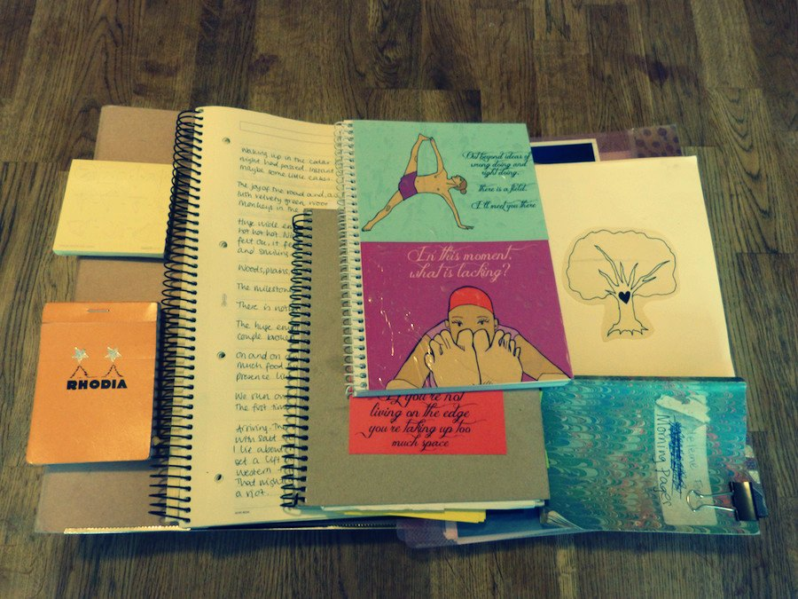

Writings
4 Lessons This Cat Taught Me About Time Management
Friday 25th April, 2014

This is Pepe. He’s a cat who lives in the same house as me. Since going freelance, observing what he does with his day has brought me a useful perspective on self employment. Here are the four main things he's taught me:
Read MoreThis Freelance Life #1: Slow Learner
Saturday 29th March, 2014
One month gone of being full-time self employed, and it’s been a journey.
The first couple of weeks I bounced around the house, feeling like any minute I'd wake up from this amazing dream. I get to do what I want all day, and my hard work is rewarded directly by the people I’m helping? Woo hoo!
Read MoreStationery
Saturday 22nd March, 2014

When I told them I was quitting my desk job to go self-employed, people told me “Make the most of the stationery cupboard!”
I remember the first one I ever saw, when I interned at New Woman magazine just before I finished school. I was sixteen and the magazine office was impossibly glamorous. Jo Elvin, now Glamour editor, was at the helm and I got to run across the road into Covent Garden, and buy her coffees and toast with peanut butter. There was a radio playing music in the office, and wine from plastic cups on Fridays.
Read More